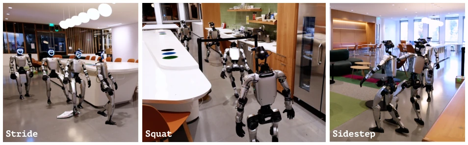
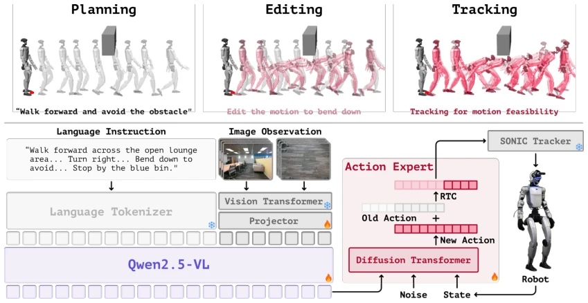
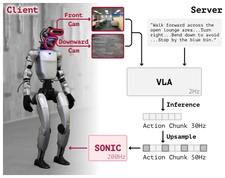
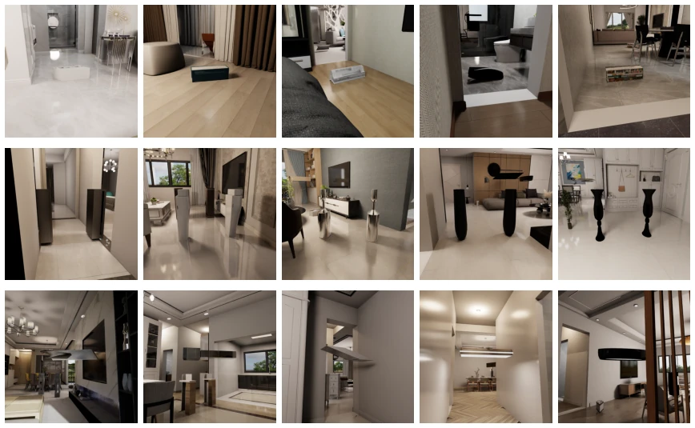
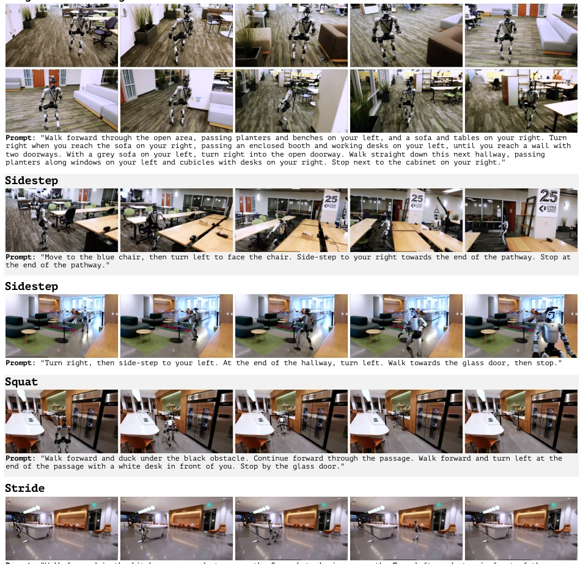

TANGO can be said to have added some real substance to the bowl of "humanoid navigation". Previous VLN methods mostly treated robots as wheels, planning only 2D paths; encountering obstacles, they either collide or detour, completely ignoring whether the arms might sweep into pendant lights. This paper directly implements 29-DoF full-body actions, filling half the gap of "embodiment". The highlight lies in the PET data generation pipeline, which can generate running and squatting trajectories without real human motion capture; zero-shot transfer to Unitree G1 was also quite impressive. But there are also many drawbacks: relying entirely on RGB input, it is estimated to go blind under low light or occlusion; the bottom-level controller SONIC became a bottleneck, unable to even climb stairs; this is not an all-around humanoid, clearly a "flat-ground specialist". Additionally, although simulation data volume is large, can the gap with the real physical world (embodied gap) really be completely bridged by this VLA? It is worth doubting. After all, understanding human language does not mean understanding physical laws, especially when it still relies on an off-the-shelf Tracker to provide a fallback.
Humanoid robots entering a room is not like driving a car; one cannot focus solely on the 2D path on the floor. Existing VLN methods [6, 7, 8, 9, 10, 11] mostly simplify navigation to planar trajectory planning, ignoring collision risks of arms and torso in narrow spaces. Although some full-body control models [17, 18, 19, 20] are strong, the navigation layer and motion layer are decoupled, unable to consider body feasibility during planning. RL-based obstacle avoidance [12, 21] relies too much on specific scene priors, with poor generalization. TANGO aims to solve this disconnection problem between "semantic intent" and "physical feasibility", enabling the robot to understand human language while flexibly sidestepping, squatting, and stepping, rather than being a stubborn machine that crashes into walls. This is not only a path planning problem, but also a full-body coordination problem under geometric constraints, after all, the humanoid robot's body configuration changes continuously during motion.

Figure 1 | Humanoid whole-body navigation in cluttered environments. We propose TANGO, a whole-body foundation model for cluttered indoor scene navigation. TANGO demonstrates strong scene understanding and robust traversal capability, navigating a 30-meter route zero-shot in a real-world cluttered office scene, and traversing through cluttered scenes with overhead and floor obstacles, as well as narrow passages.
方法Method
核心是 PET 数据生成管道和 VLA 架构。数据方面，先用 A* 规划 2D 路径，再用 SONIC 生成步行轨迹，接着用势场力编辑动作（加侧身、下蹲），最后用 Tracker 验证可行性，保留无碰撞参考轨迹作为监督。模型采用三系统架构：System-2 用 Qwen2.5VL-7B 做视觉语言感知，配合 BATS 采样处理长视频历史；System-1 是 MM-DiT 动作专家，用 flow-matching 预测 29-DoF 关节动作块，训练时用 RTC 模拟流式执行；System-0 是现成的 SONIC 底层控制器。训练时联合优化导航和 VideoQA 任务。部署时云端跑 VLA，边缘端跑 Tracker，通过 IP 网络通信。这种设计避免了控制器协同训练，但把物理可行性压力全压给了 VLA 模型。通过这种方式，模型直接输出可执行的关节空间动作，而非高层速度指令，实现了端到端的全身控制。
The core is the PET data generation pipeline and VLA architecture. Regarding data, first plan 2D paths using A*, then generate walking trajectories using SONIC, next edit actions using potential field forces (adding sidestepping, squatting), finally verify feasibility using Tracker, retaining collision-free reference trajectories as supervision. The model adopts a three-system architecture: System-2 uses Qwen2.5VL-7B for vision-language perception, cooperating with BATS sampling to process long video history; System-1 is the MM-DiT action expert, using flow-matching to predict 29-DoF joint action blocks, using RTC to simulate streaming execution during training; System-0 is the off-the-shelf SONIC bottom-level controller. During training, navigation and VideoQA tasks are jointly optimized. During deployment, VLA runs on the cloud, Tracker runs on the edge, communicating via IP network. This design avoids controller collaborative training, but puts all physical feasibility pressure on the VLA model. Through this method, the model directly outputs executable joint-space actions, rather than high-level velocity commands, achieving end-to-end full-body control.

Figure 2 | TANGO Architecture and Data Pipeline. Top: the proposed Plan–Edit–Track (PET) pipeline automatically synthesizes collision-free whole-body traversal data. Bottom: TANGO combines a vision-language backbone, a diffusion-based action expert, and a low-level tracker for language-guided whole-body humanoid control.

Figure 3 | TANGO real-world deployment system. We adopt a server-client design to separately run low- frequency VLA model and high-frequency whole-body tracker.

Figure 5 | Examples of targeted environment augmentation. Examples of augmented VLNVerse scenes with three obstacle types: low obstacles for stepping over, side obstacles for sidling through narrow passages, and overhead obstacles for squatting.
实验Experiments
在 VLNVerse 和增强后的杂乱场景上测试。基线包括离散动作模型、连续动作模型以及 InternVLA-N1 等 VLA 模型。指标看成功率 (SR)、路径长度加权成功率 (SPL) 和碰撞率 (CR)。TANGO 在杂乱场景中 SR 最高，CR 最低（9.90%），优于带 LiDAR 的 HumanoidPF 基线。真实世界零样本迁移到 Unitree G1，30 米长程导航无训练成功。消融实验显示，去掉 RTC 会导致 SR 暴跌，运动编辑对避障至关重要。不过，对比发现底层控制器 SONIC 换成 ScaleBFM 性能变化不大，说明 VLA 本身能力是关键，但物理执行上限仍受限于 Tracker。整体来看，在 3D 避障和长程导航上表现稳健，但复杂地形仍是短板。
Tested on VLNVerse and enhanced cluttered scenes. Baselines include discrete action models, continuous action models, and VLA models such as InternVLA-N1. Metrics look at Success Rate (SR), Success weighted by Path Length (SPL), and Collision Rate (CR). TANGO has the highest SR in cluttered scenes, lowest CR (9.90%), outperforming the LiDAR-equipped HumanoidPF baseline. Zero-shot transfer to Unitree G1 in the real world, 30-meter long-range navigation succeeded without training. Ablation experiments show that removing RTC causes SR to plummet, motion editing is crucial for obstacle avoidance. However, comparison found that changing the bottom-level controller SONIC to ScaleBFM resulted in little performance change, indicating VLA's own capability is key, but physical execution limits are still constrained by Tracker. Overall, performance is robust in 3D obstacle avoidance and long-range navigation, but complex terrain remains a shortcoming.

Figure 4 | Real-world deployment of TANGO. We show real-world qualitative results of TANGO in long- horizon navigation, side-stepping through narrow pathways, bending down to avoid overhead obstacles, and stepping over obstacles on the ground, demonstrating zero-shot sim-to-real transfer without any real-world training.